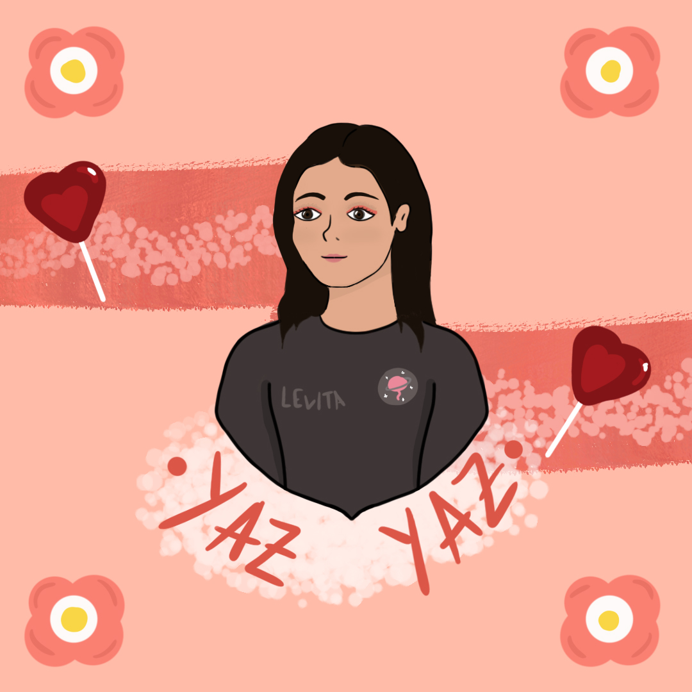
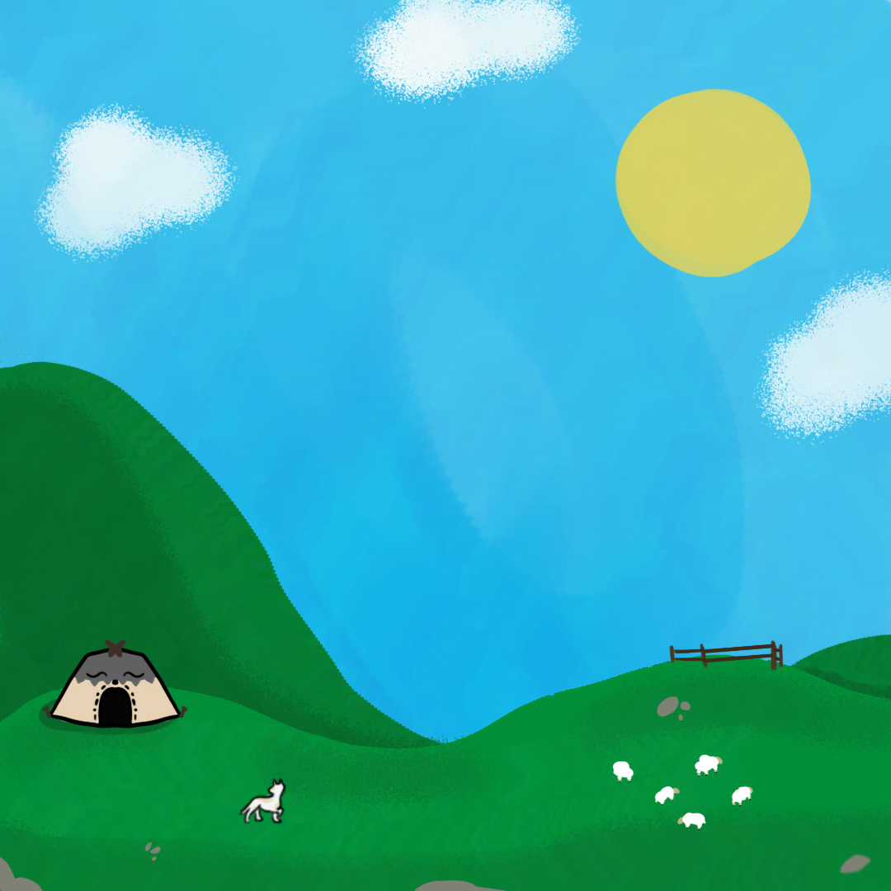
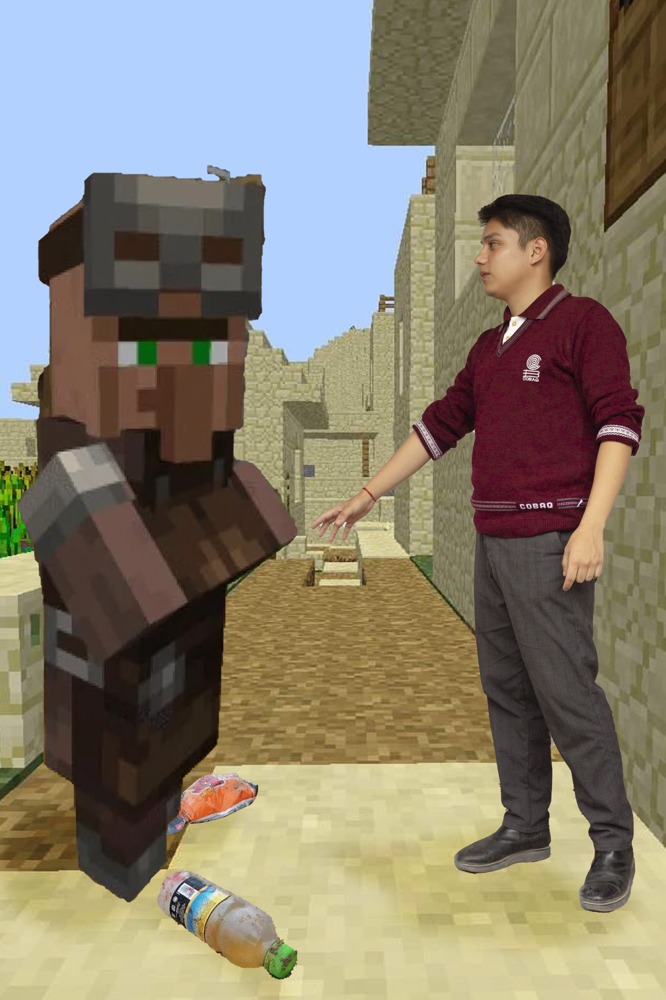
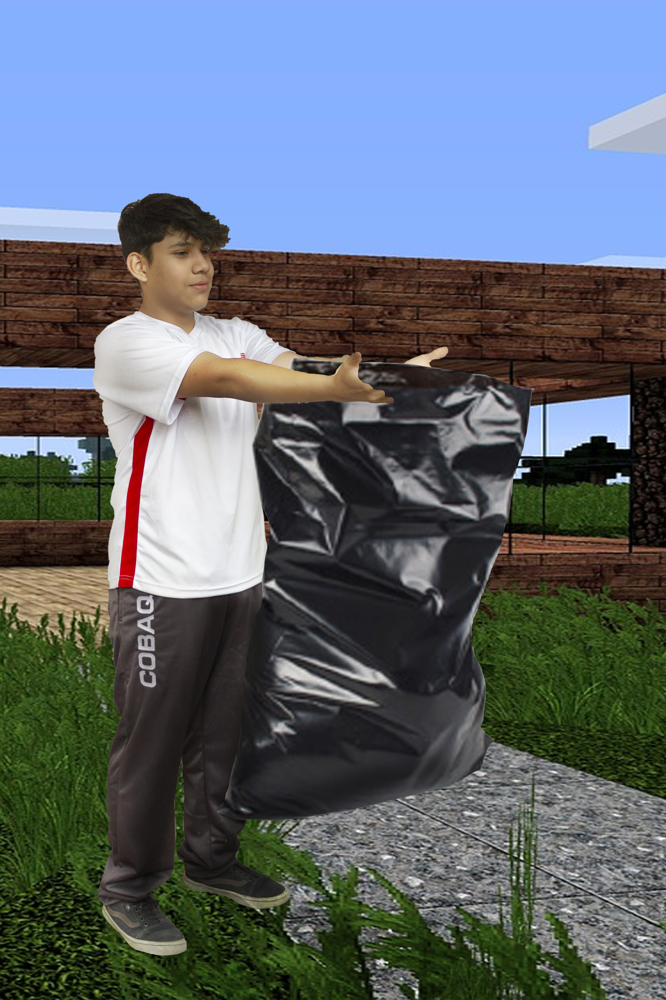

OcART
Mapa de bits
Definición de mapa de bits
Se conoce como mapa de bits a un formato que sirve para representar imágenes de forma digital, en el que las dimensiones están determinadas por la cantidad de píxeles horizontales y verticales que componen a cada imagen, y en el que cada pixel tiene asociado un rango de valores de color.
Entonces, ¿qué es un mapa de bits? Es una trama compuesta por una estructura rectangular formada por píxeles o puntos de color que forman una imagen.
Los mapas de bits pueden ser conocidos de varias formas. Algunas de ellas son:
1) Bitmap.
2) Raster image.
3) Imagen matricial.
De hecho, este concepto es un básico del diseño gráfico, ya que determina cierta forma de entender la composición de una imagen. Sea cual sea la figura, el mapa de bits es una manera de leer la información de color.
¿Cuáles son las características de un mapa de bits?
Los mapas de bits son estructuras de datos, capaces de ser visualizados mediante equipos de representación (como un monitor, por ejemplo). Sin embargo, ¿sabes realmente por qué son tan apreciados por los diseñadores gráficos?
La respuesta a esta pregunta la entenderás con las características de los mapas de bits. Veamos más acerca de estos elementos que le dan valor real a este concepto.
1. Compuesto por píxeles
La principal característica de un mapa de bits es su composición mediante píxeles o cuadrados mínimos de información de color.
A diferencia de una imagen vectorizada, en un mapa de bits cada punto de color que se representa en la imagen debe contar con la correspondiente información del color. He ahí la importancia de saber qué es un mapa de bits y cómo diferenciarlo de otros formatos.
2. Diversos usos
El uso más popular del mapa de bits o raster es en las imágenes de fotografía o el arte plano. Por lo general, puedes utilizar los mapas de bits cuando quieres trabajar fotografías con mucho detalle o alguna imagen escaneada.
Para la obtención de las imágenes, se necesita el uso de dispositivos que admitan la conversión de análogico a digital. Como es el caso de las cámaras digitales o los escáneres.
En efecto, esta es una de las principales diferencias entre los mapas de bits y las imágenes vectoriales. Estas últimas son usadas principalmente para trabajar ilustraciones, logotipos o algún elemento para web.
¡Pero no nos adelantemos! Ya hablaremos más adelante de las imágenes vectoriales.
3. Relación dimensión/calidad
Otro aspecto que verás a lo largo de este artículo sobre las características de los mapas de bits es la relación que existe entre la dimensión y la calidad en las imágenes de este tipo.
Si modificas o alteras la dimensión de una imagen, es muy probable que obtengas una pérdida significativa en la calidad del trabajo, por lo que debes estar atento al momento de modificar una imagen de mapa de bits. Esta es una de las desventajas principales de esta clase de imágenes de mapas de bits.
Ejemplos de diseños en mapa de bits








¿Qué es un Mapa de Bits?
Mas contenido...
Mapa de ubicación
Creado por Ramírez Morales Iván, García Lopéz Alejandro, Juarez Sevilla Leonardo, Ramírez Morales Hugo David